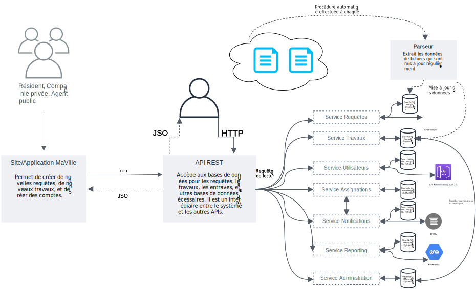
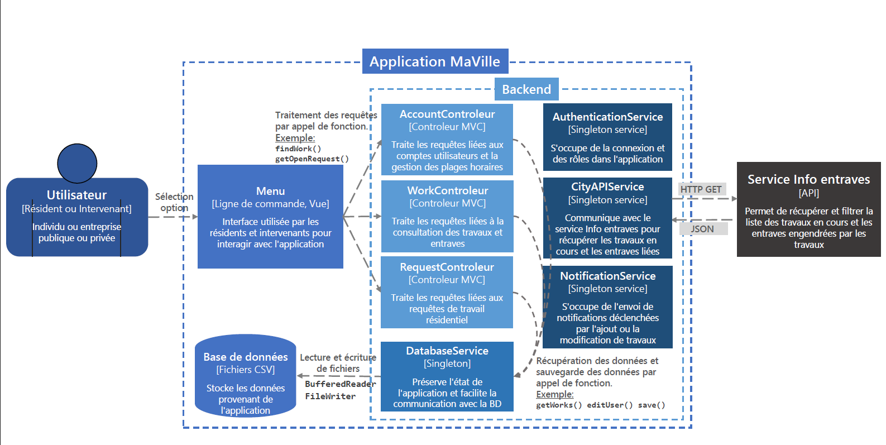
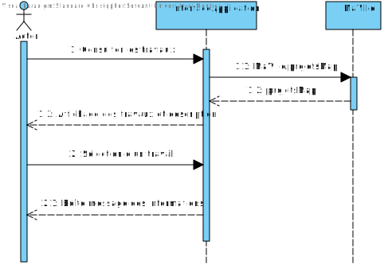
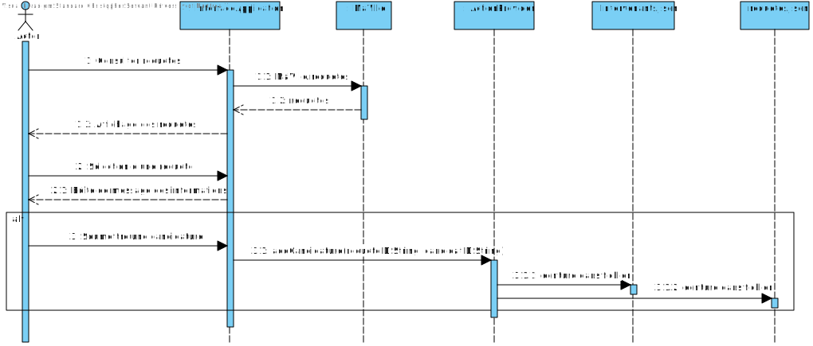
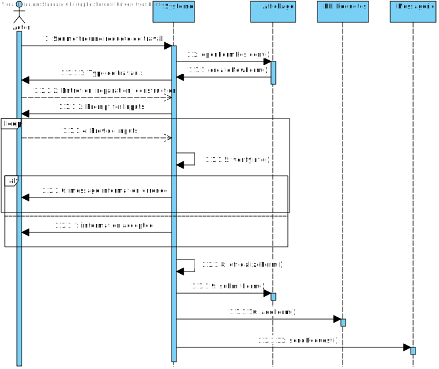

Le système commence avec le menu, qui affiche une carte de Montréal. Un API est utilisé pour prendre les informations de la carte, de les afficher, et un autre API pour mettre les zones, les travaux, les endroits à problème, bref, un API servant à afficher des données supplémentaires sur la carte.
Ensuite, on demande de voir les projets de requêtes, ce qui nécessite un API pour aller chercher les informations sur le site « Infos entraves et travaux ». Après avoir reçu l’information, on enregistre ces données dans la base de données MaVille, par un API, s’appelant « Requête ». Ensuite, cette série de données est affichée pour l’utilisateur.
Comme autre possibilité, il aurait pu vouloir avoir des projets de travaux, qui eux aussi ont besoin d’un accès à « Infos entraves et travaux ». Mais, ce qui semble être plus important dans notre projet, est que cette information vient de la base de donnés de la ville de Montréal.
Ainsi, à partir de maintenant, nous n’allons que chercher ces informations à une certaine intervalle de temps afin qu’on soit mise à jour avec le système de la ville qui est malheureusement pas entièrement sur le système MaVille car les requêtes et les travaux peuvent encore être faits de d’autres façons, comme par version papier directement. Nous allons maintenant parler d’une base de donnée de requête et une de travaux et la base de données requête est celle du projet, celle de MaVille, qui se fait mettre à jour à un intervalle de temps prédéfini, et une base de données travaux, qui est appelée la base de données de la ville de Montréal car ces travaux sont officiels et sont prêt à être exécuté par des compagnies privées et par la ville.
Il peut ensuite sélectionner des éléments sur la carte, sélectionner un travaux, une requête, et ceci va ouvrir les informations en cherchant une seconde fois dans la base de données avec l’adresse demandée pour faire les actions nécessaires. Cette information affichée est maintenant enregistrée dans une mémoire cache, ce qui permet à l’utilisateur d’y avoir accès plus rapidement aux prochaines fois qu’il consulte la carte et/ou les travaux et/ou les requêtes.
Chaque action que l’utilisateur prend est enregistrée dans une base de donnée. Ce qu’on entend par action est, par exemple: aimer une requête déposée, commenter sur une requête, le nombre de fois qu’il ouvre l’application par jour, l’endroit où il crée ses requêtes, les numéros d’identification des requêtes et des travaux visionnées, etc.
Afin de se connecter au système de MaVille, le système doit faire des requêtes aux APIs de logging, afin que la connexion se fasse correctement, tout en suivant des protocoles. Également, les protocoles doivent être sécuritaire, donc nous utilisons également des APIs d’authentification, de sécurité de l’API, et d’encryptage.
À chaque intervalle de temps prédéterminé, le système sauvegarde l’état de chaque branch, de chaque services offerts, leurs utilisations, si il y a des problèmes, des surcharges, une gestion mal organisé, etc. Et il le sauvegarde dans un tracer afin d’avoir ces données si un service est problématique, si une erreur advient ou pour un rafraîchissement du système.
Des APIs qui vont servir de distributeur de traffic afin d’éviter les surcharges seront mis en place, ainsi que ceux qui ajuste automatiquement le nombre d’instances de service pour mieux prévoir les problèmes, mieux gérer les risques qui pourraient s’occasionner. Nous avons également un API pour les problèmes de services, au cas où un serveur ou un autre système/service ne fonctionne pas, cet API permet de redistribuer les tâches aux autres serveurs et analyser le problème afin de le régler.
Nous avons un API pour enregistrer les informations personnelles des utilisateurs, surtout ceux des compagnies privées et des agents du secteur public. Un API pour sauvegarder le cache dans un serveur le plus près de l’utilisateur sera mis en place et un gestionnaire de ces caches serait aussi installé.
Il ne reste plus que le front-end du système à implémenter, ce qui requiert un API d’affichage approprié pour le système MaVille.
Architecture principale du système : Hybride
L’architecture microservices permet de créer des systèmes à plus grande échelle, car elle peut être divisée en plusieurs fonctionnalités qui travaillent en services indépendants. Ceci améliore donc la scalabilité, facilite la correction des problèmes et les nouvelles mises à jour, et permet de mieux gérer les situations de panne d’un service spécifique.
Comme autre architecture, on ajoute aussi le MVC car nous jouons avec du frontend dans l'application. Nous avons la vue où les résidents et les intervenants intéragissent avec l'interface, le modèle qui gère la récupération des données via les microservices et les contrôleurs qui eux vont gérer les actions des utilisateurs et la communication avec les microservices par des APIs.
Nous ajoutons également une approche en couches, avec une couche de présentation, qui marque le frontend, une couche de services, où toutes les demandes de traitements des microservices sont faites, et une couche de données, où nous avons les bases de données spécialisées.
Également, une architecture client-serveur est ajouté, afin de réduire la complexité de certaines tâches plus simple. Le serveur central redirige les requêtes vers les microservices qui sont concernés par des APIs
Nous choisissons cette combinaison car elle apporte une plus grande flexibilité, ce qui pourrait nous aider au niveau de la maintenance et si nous voulons agrandir le projet pour qu'elle ne soit pas seulement focaliser sur la ville de Montréal. La performance est également grandement amélioré par l'utilisation des APIs par les microservices et par les opérations parfois plus simple de l'interaction clien-serveur. L'architecture MVC apporte une simplicét au niveau frontend du système pour l'application. L'approche en couches permet une organisation plus claire du système et va aider avec la mainteance du système également.
Organisation des services
1. Service Utilisateurs:
a. Gère les résidents, les compagnies privées, et les agents publics
b. Authentification et autorisation (intègre un système comme OAuth 2.0)
2. Service Requêtes :
a. Gère la création, la modification, et le suivi des requêtes des résidents
b. Inclut un système de priorisation des requêtes
3. Service Travaux :
a. Centralise les données des travaux en cours et des nouveaux projets
b. Intègre les APIs pour récupérer les données des entraves en temps réel
4. Service Assignations :
a. Associe les projets aux compagnies privées intéressées
b. Gère les notifications et les validations
5. Service Notifications :
a. Envoie des notifications aux utilisateurs via courriel, SMS, ou une application mobile
6. Service Reporting :
a. Génère des rapports sur les travaux terminés, les requêtes en attente, et les performances des compagnies
7. Service d'Administration :
a. Permet à la ville de superviser les projets et de configurer les priorités
Base de données
1. Base NoSQL (MongoDB, DynamoDB) :
- Pour stocker les données des travaux et des requêtes (rapides, flexibles).
2. Base relationnelle (PostgreSQL, MySQL) :
- Pour gérer les utilisateurs et les relations entre les projets, requêtes, et compagnies.
3. Base orientée graphe (Neo4j) :
- Pour modéliser les connexions complexes entre les projets, les compagnies, et les zones géographiques.
API et intégrations
- Intègre un API Gateway (par exemple, Kong, AWS API Gateway) pour centraliser les appels API et assurer la sécurité.
- Communication entre services via gRPC ou REST (en fonction des besoins de performance).
Technologies possibles
- Backend : Node.js, Python (FastAPI, Django), ou Java (Spring Boot).
- Frontend : Frameworks comme React ou Angular.
- Infrastructure : Kubernetes pour l'orchestration des conteneurs et Docker pour le packaging.
- Messagerie : RabbitMQ ou Kafka pour les notifications asynchrones.
- Cloud : AWS, Azure, ou GCP pour l’hébergement scalable.
Résilience et scalabilité
- Mise en cache : Utilise Redis ou Memcached pour réduire les temps de réponse.
- Monitoring : Installe des outils comme Prometheus et Grafana pour surveiller la performance et l’activité.
- CI/CD : Automatise les déploiements avec des outils comme GitHub Actions, Jenkins, ou GitLab CI/CD.
Sécurité
- Chiffrement des communications avec HTTPS.
- Authentification via JWT ou OAuth 2.0.
- Vérification des droits d’accès (RBAC).


Nous choisissons un design modulaire où la cohésion dans la classe est forte, les relations entre les classes sont faibles et les séparations sont claires visuellement afin d’avoir un programme plus compréhensible. Nous implémentons des classes abstraites car nous avons des modules ayant des similarités, comme les résidents, les compagnies privées et les agents publics, qui ont des éléments en commun, par exemple, le nom, l’adresse, le courriel, le numéro de téléphone et quelques autres. Des classes d’instanciations comme Requetes et Travaux utilise l’encapsulation, afin de créer de nouvelles instances où les informations ne peuvent pas être modifiées sans utiliser les setters données par la classe, et les informations ne peuvent pas être vus sans utiliser les getters. Avec toutes ces fonctionnalités que nous utilisons, une conception qui permet une plus grande docilité dans les changements futurs sur les classes, les méthodes et les variables est donc plus facile à gérer que d’autres modèles qui restreint les modifications possible sur le système. Les répercussions sur des nouveautés apportées au programme sont alors moins négatives et plus simple à régler en suivant ce design. Si de plus gros changements ont besoin d’être faits, par exemple rajouter des villes autres que Montréal dans notre système, rajouter d’autres types d’utilisateurs, modifier les envois des requêtes et des travaux pour qu’ils soient aussi envoyés par lettre, alors notre choix initial permet de faire ces modifications avec une plus grande facilité.


